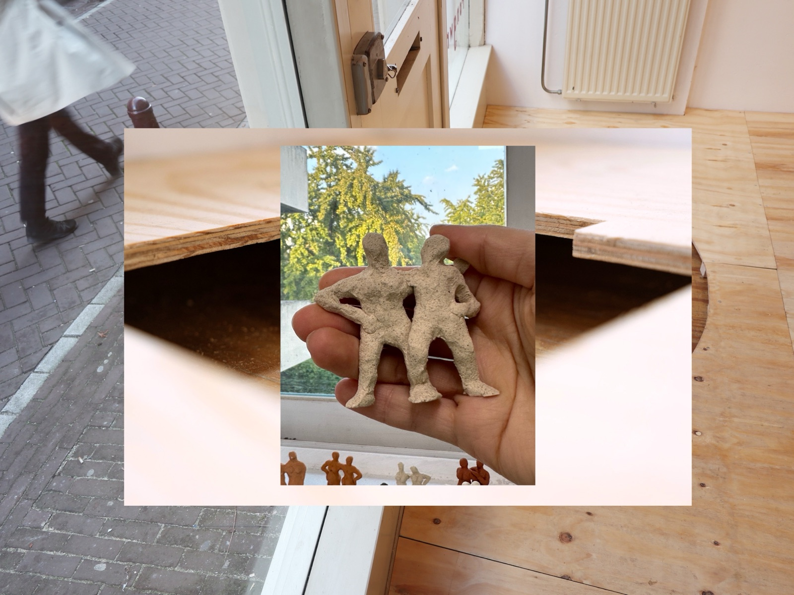

워크숍
Linking Figures

프로그램 소개
서로 몸을 맞대고 포즈를 취한 뒤 조각으로 만들기
‘링킹 피규어’ 워크숍은 뜻밖의 장소에서 발견되는 조각처럼, 연결된 몸, 리추얼, 그리고 토우를 빚는 감각을 함께 경험합니다.
암스테르담과 서울을 잇는 작은 조각 링킹 피규어(Linking Figures)를 소개합니다. 암스테르담 동네 곳곳에서 발견되는 조각상과 연결된 몸, 리추얼, 토우의 이미지를 함께 살펴봅니다.
잘 만들지 않아도 괜찮습니다. 작고 세밀하게 만드는 데 집중해보세요.
진행 과정
진행 과정
Taking Photos
함께 밖으로 나가 자연광을 조명으로 사용합니다. 세 명씩 팀을 이루어 두 명은 신체가 서로 닿는 포즈를 만들고, 나머지 한 명은 앞면과 옆면을 포함해 서로 다른 각도에서 세 장의 사진을 촬영합니다.
Sculpting with Clay
사진을 참고해 점토로 서로 연결된 신체의 모습을 만듭니다. 손이나 어깨가 맞닿는 접점에 특히 주의를 기울입니다. 이어서 파트너에게 좋아하거나 소중히 여기는 것이 무엇인지 묻고, 그것을 작은 점토 모형으로 만들어 조각에 더합니다.
Connecting the Sculptures
마지막으로 모든 참여자의 연결된 인물 조각을 한데 모아 하나의 통합된 작업으로 연결합니다.